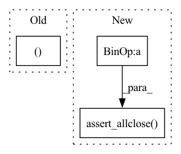

Pattern ID :20204
Before Change
w = Tensor.ones(32,12,3,3)
out = x.conv2d(w, stride=(2,2), padding=(1,1))
r1, r2 = out.relu(), out.elu()
r1.numpy(), r2.numpy()
// TODO: make this a real test
Tensor.no_grad = False
def test_first_three(self):After Change
out = x.conv2d(w, stride=(2,2), padding=(1,1))
r1, r2 = out.relu(), out.elu()
np.testing.assert_allclose(r1.numpy(), np.maximum(out.numpy(), 0))
np.testing.assert_allclose( r2.numpy(), np.where(out.numpy() > 0, out.numpy(), (np.exp(out.numpy()) - 1)), atol=1e-5)
Tensor.no_grad = False
def test_first_three(self):
Tensor.no_grad = TrueIn pattern: SUPERPATTERN
Frequency: 4
Non-data size: 3
Instances Fragment ID: 65912861
Project Name: geohot/tinygrad
Commit Name: 8b7a16cf85035ed22f0fef0d9db4e8398b3cebfc
Time: 2023-03-10
Author: connor.henderson@talkiatry.com
File Name: test/test_conv.py
M Class Name: TestConv
N Class Name: TestConv
M Method Name: test_two_overlapping_binops_no_rerun(1)
N Method Name: test_two_overlapping_binops_no_rerun(1)
M Parent Class: unittest.TestCase
N Parent Class: unittest.TestCase
M File Name: test/test_conv.py
N File Name: test/test_conv.py
M Start Line: 55
M End Line: 55
N Start Line: 53
N End Line: 56
Before Change
utt.assert_allclose(alpha * res_ref + beta * out, res, rtol=rtol)
def run_conv_gradinput(self, algo, precision, parameters):
(inputs_shape, filters_shape, subsample, dilation ), border_mode, conv_mode, alpha, beta = parameters
inputs_val = np.random.random(inputs_shape).astype(theano.config.floatX)
filters_val = np.random.random(filters_shape).astype(theano.config.floatX)After Change
// Raise tolerance for float16
rtol = 5e-2 if dtype == "float16" else None
if beta == 0:
utt.assert_allclose( alpha * res_ref, res, rtol=rtol)
else:
utt.assert_allclose(alpha * res_ref + beta * inputs_val, res, rtol=rtol)
def run_conv_gradweight(self, algo, dtype, precision, parameters): Fragment ID: 65912863
Project Name: Theano/Theano
Commit Name: 1b6e638987092473fea0712403173f91ded4176f
Time: 2017-10-05
Author: stevenbocco@gmail.com
File Name: theano/gpuarray/tests/check_dnn.py
M Class Name: BaseTestDnnConv
N Class Name: BaseTestDnnConv
M Method Name: run_conv_gradinput(5)
N Method Name: run_conv_gradinput(4)
M Parent Class: object
N Parent Class: object
M File Name: theano/gpuarray/tests/check_dnn.py
N File Name: theano/gpuarray/tests/check_dnn.py
M Start Line: 382
M End Line: 433
N Start Line: 315
N End Line: 371
Before Change
utt.assert_allclose(alpha * res_ref + beta * inputs_val, res, rtol=rtol)
def run_conv_gradweight(self, algo, precision, parameters):
(inputs_shape, filters_shape, subsample, dilation ), border_mode, conv_mode, alpha, beta = parameters
inputs_val = np.random.random(inputs_shape).astype(theano.config.floatX)
filters_val = np.random.random(filters_shape).astype(theano.config.floatX)After Change
// Raise tolerance for float16
rtol = 5e-2 if dtype == "float16" else None
if beta == 0:
utt.assert_allclose( alpha * res_ref, res, rtol=rtol)
else:
utt.assert_allclose(alpha * res_ref + beta * filters_val, res, rtol=rtol)
def get_expected_tcount(self): Fragment ID: 65912862
Project Name: Theano/Theano
Commit Name: 1b6e638987092473fea0712403173f91ded4176f
Time: 2017-10-05
Author: stevenbocco@gmail.com
File Name: theano/gpuarray/tests/check_dnn.py
M Class Name: BaseTestDnnConv
N Class Name: BaseTestDnnConv
M Method Name: run_conv_gradweight(5)
N Method Name: run_conv_gradweight(4)
M Parent Class: object
N Parent Class: object
M File Name: theano/gpuarray/tests/check_dnn.py
N File Name: theano/gpuarray/tests/check_dnn.py
M Start Line: 436
M End Line: 479
N Start Line: 371
N End Line: 419
Before Change
w = Tensor.ones(32,12,3,3)
out = x.conv2d(w, stride=(2,2), padding=(1,1))
r1, r2 = out.relu(), (out-1)
r1.numpy(), r2.numpy()
Tensor.no_grad = False
// TODO: make this a real test
def test_two_overlapping_binops_no_rerun(self):After Change
out = x.conv2d(w, stride=(2,2), padding=(1,1))
r1, r2 = out.relu(), (out-1)
np.testing.assert_allclose(r1.numpy(), np.maximum(out.numpy(), 0))
np.testing.assert_allclose( r2.numpy(), out.numpy() - 1)
Tensor.no_grad = False
def test_two_overlapping_binops_no_rerun(self):
Tensor.no_grad = True Fragment ID: 65912864
Project Name: geohot/tinygrad
Commit Name: 8b7a16cf85035ed22f0fef0d9db4e8398b3cebfc
Time: 2023-03-10
Author: connor.henderson@talkiatry.com
File Name: test/test_conv.py
M Class Name: TestConv
N Class Name: TestConv
M Method Name: test_two_binops_no_rerun(1)
N Method Name: test_two_binops_no_rerun(1)
M Parent Class: unittest.TestCase
N Parent Class: unittest.TestCase
M File Name: test/test_conv.py
N File Name: test/test_conv.py
M Start Line: 45
M End Line: 45
N Start Line: 43
N End Line: 46